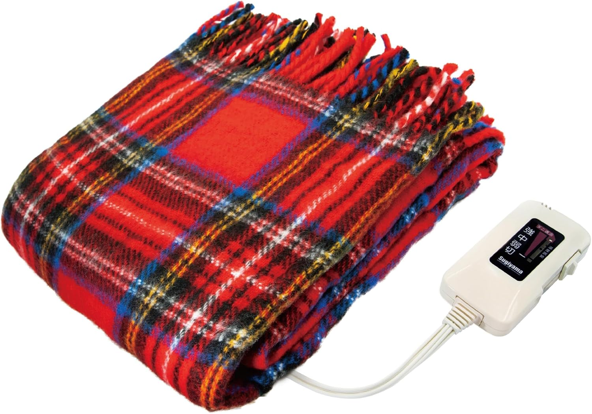
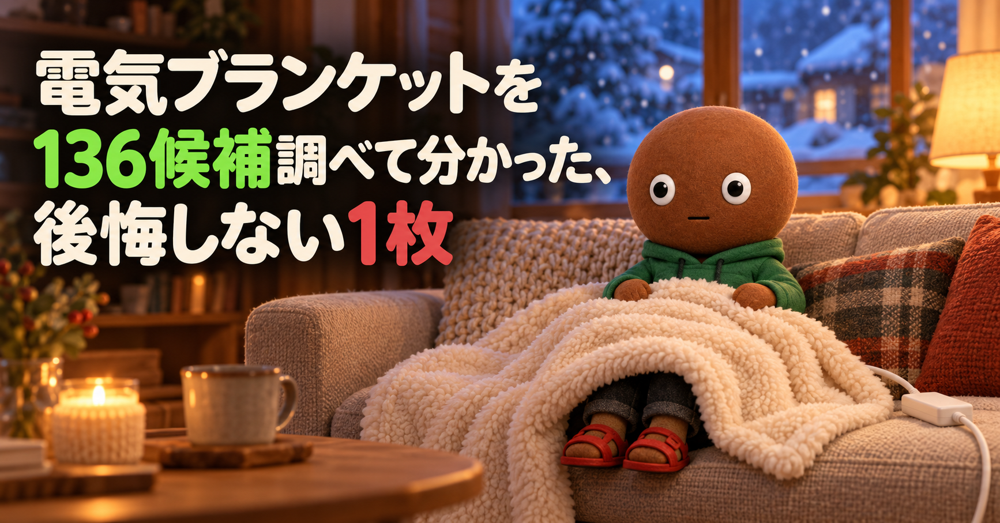
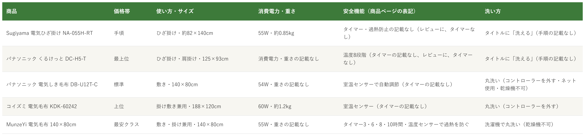

Amazonで見る電気毛布を選べず、掛けるか敷くか、安全機能の違いで迷っている人へ
その電気毛布、
サイズだけで
選んでいませんか？
電気ひざ掛けから敷き・掛け敷き兼用まで、電気毛布136候補を調査。使い方とサイズ、タイマーや室温センサーなどの安全機能、洗い方も確認し、使い方が重複しない5商品を比較しました。
自分に合う電気毛布を探す
この記事はAmazonアソシエイト・プログラムの参加者として、紹介料を得る場合があります（PR）。仕様は調査時点の情報です。
136候補から、使い方の違う5商品に絞りました。11月は電気毛布の出番が増える時期です。まずは気になる1つへ。向いている人・向いていない人と、低評価レビュー、使うときの注意もまとめています。
136候補を調査
5商品に厳選
低評価レビューも確認済み
結論から先に言うと：
どう使うか（掛ける・敷く・巻く）、どんな安全機能がほしいか、どう洗うか。何を優先するかで1つを。
横にスワイプして、5商品を見比べる
選び方の基準は3つ
調べてわかったのは、基準は3つでした。
1つ目は「どう使うか」。掛ける、敷く、ひざや肩に巻く、のどれかで、必要なサイズが違います。今回の5商品は、ひざ掛けサイズ（約82×140cm・125×93cm）が2つ、140×80cmが2つ、188×120cmが1つです。敷き用は、布団の下に敷いて寝る前に温める使い方、掛け敷き兼用は、掛けても敷いても使える使い方になります。
2つ目は「どんな安全機能があるか」。NITE（製品評価技術基盤機構）は、電気毛布などは、心地よい温度でも長時間、同じ場所に触れていると「低温やけど」になるとして注意を呼びかけています。東京都も、電気毛布は就寝前に温めておき、就寝中は高温で使わないよう勧めています。商品ページで、切り忘れ防止のタイマーを明記していたのは、5商品のうちMunzeYiだけでした。パナソニックのしき毛布とコイズミは室温センサー、パナソニックの「くるけっと」は温度8段階の記載で、Sugiyamaとくるけっとは、レビューにタイマーがないという声がありました。
3つ目は「どう洗うか」。5商品とも洗えると書かれていますが、手順は違います。パナソニックのしき毛布は、コントローラーを外して、毛布洗い機能付きの洗濯機でネットを使うこと、乾燥機は使えないこと、と細かく書かれていました。購入前に、洗い方の注意を確認します。
比較表

価格帯・使い方とサイズ・消費電力と重さ・安全機能・洗い方の比較（価格帯は、調査時点のAmazon出品価格の順に付けた目安です。セールや出品者で変動します。数字と機能は商品ページの表記で、安全を保証するものではありません）
Sugiyama NA-055H
- 手頃
- ひざ掛け・約82×140cm
- 55W・約0.85kg
- タイマー・過熱防止の記載なし（レビューに、タイマーなし）
パナソニック くるけっと
- 最上位
- ひざ掛け・肩掛け・125×93cm
- 消費電力・重さの記載なし
- 温度8段階（タイマーの記載なし、レビューに、タイマーなし）
パナソニック DB-U12T-C
- 標準
- 敷き・140×80cm
- 54W・重さの記載なし
- 室温センサーで自動調節（タイマーの記載なし）
コイズミ KDK-60242
- 上位
- 掛け敷き兼用・188×120cm
- 60W・約1.2kg
- 室温センサー（タイマーの記載なし）
MunzeYi 140×80cm
- 最安クラス
- 敷き・掛け兼用・140×80cm
- 55W・重さの記載なし
- タイマー3・6・8・10時間・温度センサーで過熱を防ぐ
向いてる人
- デスクやソファで、足元を温めたい人（レビューに、椅子に座る作業で脚が冷える人に、という声）
- 日本製のひざ掛けを選びたい人（日本製の表記）
- 評価の件数が多い定番を選びたい人（2,305件）
向いてない人
- 切り忘れ防止のタイマーがほしい人（レビューに、タイマーが付いていないので消し忘れ要注意、という声）
- コントローラーが大きいのが気になる人（★4に、スイッチ本体が大きくて重く、気づかないうちに触れて設定温度がずれる、という声）
- 毛玉や抜け毛が気になる人（★3に抜け毛が多い、2020年の★4に毛玉ができやすい、という声）
選ぶ決め手約82×140cmで、約0.85kgです。タイマーのない、分かりやすい操作の日本製ひざ掛けを選ぶ人向けの1台です。
低評価レビューを調べました
Amazonのレビューには、★4で、毛布生地は良いがスイッチ本体が大きくて重い、軽すぎて気づかないうちに触れて設定温度がずれることがある、タイマーが付いていない、という投稿がありました。★3には、悪くないが抜け毛が多くて面倒、という投稿があります。2020年の★4には、約6年使ったあと暖まらなくなった（断線とみられる）、毛玉ができやすい、熱線が太くてゴロゴロ感がある、という投稿もありました。米国からの★1に、操作パネルが日本語で使えない、という投稿もあります。評価の内訳は、★1が3%、★2が4%です。個別の投稿の真偽までは確認できません。
参考：Amazon商品ページのレビュー（★1、★3、★4）
Sugiyamaのひざ掛けは、
日本製のシンプルな1枚です。
約82×140cm、
重さは約0.85kgです。
タイマーはなく、
保証期間は1年です。
向いてる人
- 肩掛けとひざ掛けを、1枚で兼ねたい人（商品ページに、肩掛けやひざ掛けに使い方いろいろ、とあります）
- 温度を細かく調整したい人（8段階）
- 軽さと肌触りを重視する人（レビューに、さらさらふわふわで軽く、毛玉がほとんど出ない、という声が1件）
向いてない人
- 全身を包みたい人（★3に、肩からかけて座るとお腹まで届かず、ひざ掛けだと腰が冷える、という声）
- 切り忘れ防止のタイマーがほしい人（★3に、タイマーがない、という声）
- 洗い方を確認せずに洗いたい人（★1に、洗えると思って買ったが1年で電源が入らなくなった、という声）
- 価格を抑えたい人（今回の5商品の中で、価格帯は最上位です）
選ぶ決め手125×93cmで、8段階の温度調整です。肩にもひざにも使える、パナソニックのコンパクトな1枚です。
低評価レビューを調べました
Amazonのレビューには、★3で、日本の会社で価格も高いのに中国製造、サイズが小さく全身は包めない（肩からかけて座るとお腹まで届かない、ひざ掛けにすると腰が冷える）、タイマーがない、リモコンが大きくて邪魔、という投稿がありました。★1には、洗えると表示されていたので洗濯機で洗えると思っていた、購入から約1年で電源が入らなくなった（洗濯機にかけたかは記憶がない、とも書かれています）、という投稿があります。評価の内訳は、★1が6%、★2が3%です。個別の投稿の真偽までは確認できません。
参考：Amazon商品ページのレビュー（★1、★3）
パナソニックのくるけっとは、
肩にもひざにも使える
8段階の1枚です。
サイズは125×93cm、
重さの記載はありません。
タイマーはなく、
洗い方は取扱説明書で確認します。
向いてる人
- 布団の下に敷いて、寝る前に温めておきたい人（レビューに、背中や足元が温かく、寝やすい、という声）
- 室温に合わせて、温度を自動で調節してほしい人（室温センサー）
- 丸洗いして、清潔に使いたい人（洗い方の注意あり）
向いてない人
- 切り忘れ防止のタイマーがほしい人（商品ページに、タイマーの記載は見当たりません）
- 掛けて使いたい人（敷き用の商品です）
- コードの長さを重視する人（★4に、スイッチコードが短く、あと20cmほしい、という声）
選ぶ決め手140×80cmで、消費電力は54Wです。室温センサーで温度を調節する、敷き専用のシンプルな1枚です。
低評価レビューを調べました
Amazonのレビューには、★3で、子供用に良いサイズ、冬の電気代の節約に役立てている、という投稿がありました。★4には、背中と足元が温かく寝やすいが、毛布から伸びているスイッチコードが短く、あと20cmほしい、という投稿があります。★1〜★2の投稿は、商品ページに表示された範囲では見当たりませんでした（評価の内訳には、★1が4%、★2が3%あります）。表示された投稿のサイズ欄は、多くが「旧モデル」でした。個別の投稿の真偽までは確認できません。
参考：Amazon商品ページのレビュー（★3、★4）
パナソニックのしき毛布は、
寝る前に布団を温める
敷き専用の1枚です。
サイズは140×80cm、
消費電力は54Wです。
室温センサーで、
温度を自動で調節します。
向いてる人
- 掛けにも敷きにも使いたい人（掛敷兼用・188×120cm）
- 足元を重点的に温めたい人（頭寒足熱の配線。レビューに、足元側がしっかり暖かい、という声）
- 販売元がAmazon.co.jpの商品を選びたい人
向いてない人
- 切り忘れ防止のタイマーがほしい人（商品ページに、タイマーの記載は見当たりません）
- 製造時期や製造国が気になる人（★2に、2026年10月の注文で2024年製（インドネシア製）が届いた、という声）
- もっと温度を上げたい人（レビューに、もう少し温度を高くできるといい、という声）
- 評価の件数で選びたい人（今回の5商品の中で、138件と少ないです）
選ぶ決め手188×120cmで、約1.2kgです。掛けにも敷きにも使えて、室温センサーが付いた、Amazon販売の1枚です。
低評価レビューを調べました
Amazonのレビューには、★2で、2026年10月に注文したが2024年製（インドネシア製）が届いた、機能はまだ使っていないので分からない、という投稿がありました（5人が参考になったと答えています）。★3には、まあまあ暖かい、という短い投稿があります。★4には、以前の同じ製品が断線して壊れたので買い直した、暖まるまで少し時間がかかる、という投稿もありました。評価の内訳は、★1が3%、★2が7%です。同じ商品ページには、サイズや使い方（掛け敷き・敷きなど）の違うタイプも表示されます。個別の投稿の真偽までは確認できません。
参考：Amazon商品ページのレビュー（★2、★3、★4）
コイズミの掛敷兼用は、
掛けにも敷きにも使える
大きめの1枚です。
サイズは188×120cm、
重さは約1.2kgです。
室温センサーと、
頭寒足熱の配線が付きます。
向いてる人
- 電源の切り忘れが心配な人（切り忘れ防止タイマー付き）
- 敷きにも掛けにも使いたい人（敷き掛け兼用。レビューに、掛け毛布としても軽く、早く暖まる、という声）
- 評価の件数が多い商品を選びたい人（2,201件、★5が67%・★4が17%）
向いてない人
- 日本のメーカー名や、長い保証で選びたい人（ブランドはMunzeYi、保証期間の記載は見当たりません）
- 長く使った人の声を知りたい人（表示された投稿は2026年10月のものが中心で、使い始めの感想が多いです）
- 全身を掛けたい人（140×80cmです。レビューに、上半身をすっぽり包める、という声）
- コンセントの位置に縛られたくない人（レビューに、コンセント式なので場所を選ぶ、という声）
選ぶ決め手タイマーは3・6・8・10時間、温度は5段階です。切り忘れ防止のタイマーを、商品ページで明記していた、価格を抑えた1枚です。
低評価レビューを調べました
Amazonのレビューには、表示された日本からの投稿8件の中に、★1〜★3は見当たりませんでした（評価の内訳には、★1が5%、★2が2%、★3が9%あります）。★4には、コンセント式なので場所を選び、行動が電気毛布に縛られる、USB電源だともっと良い、という投稿がありました。表示された投稿は、2026年10月のものが中心で、使い始めの感想が多く、長く使った声は確認できていません。個別の投稿の真偽までは確認できません。
参考：Amazon商品ページのレビュー（★4と、表示された★5の投稿）
MunzeYiの電気毛布は、
切り忘れが心配な人向けの
タイマー付きです。
サイズは140×80cm、
消費電力は55Wです。
温度は5段階、
タイマーは3・6・8・10時間です。
136候補をどう絞った？ 調査の経緯を見る
電気毛布は、掛けるのか敷くのか、タイマーや室温センサーがあるか、どう洗うか、で使い勝手が大きく変わります。ひざ掛けサイズから大判まであり、どれを選べばいいのか迷います。
なので今回、電気毛布の仕様を調べて比較しました。各商品ごとに、向いてる人・向いてない人も調べているので、自分に合う1つを探してみてください。
136候補から5つに絞り込みました
Amazonで「電気ブランケット」「電気ひざ掛け」「電気敷毛布」を検索し、各2ページ分の結果を一覧で確認しました。評価が★4以上の商品ページは136件でした（同じ商品の色・サイズ違いは1件にまとめています。電気を使わない毛布や、足元用の小物が混ざっていたため、実際の電気毛布はこれより少なくなります）。採用した5商品は個別の商品ページまで開いて、評価と件数、主な仕様を確認しました。見送った商品の評価と件数は、検索結果に表示されていた値です。
採用したのは、Sugiyama NA-055H（日本製のひざ掛け）、パナソニック くるけっと（肩にもひざにも）、パナソニック DB-U12T-C（敷き・室温センサー）、コイズミ KDK-60242（掛け敷き兼用）、MunzeYi 140×80cm（タイマー付き）の5つです。使い方が重複しないように選びました。
ひざ掛けの枠では、Sugiyamaの別色（評価4.2・763件）、ライフジョイ JPN121GC（評価4.2・891件）、広電のひざ掛け（評価4.1・147件）などがありました。NA-055Hは、評価4.3・2,305件で、件数が多く、日本製の定番だったため選びました。肩にかけられる巻くタイプは、くるけっと（評価4.3・382件）が、今回の検索結果で見つかった唯一の候補でした。
敷きの枠では、件数ならSugiyama NA-023S（評価4.3・8,743件）やアイリスオーヤマ EHB-1913（評価4.2・5,671件）、MORITA TMB-S14KS（評価4.2・1,830件）のほうが多くなっています。Sugiyamaはひざ掛けで採用済みのため、同じ枠では室温センサーのあるパナソニック DB-U12T-C（評価4.2・2,299件）にしました。件数を重視する場合は、見送った商品も候補になります。
掛け敷き兼用の枠では、Sugiyama NA-013K（評価4.2・4,001件）やパナソニックの別型（評価4.0・391件）がありました。コイズミ KDK-60242は評価4.2・138件と件数が少なめですが、Amazon販売で室温センサーが付くため選びました。件数を重視する場合は、NA-013Kも候補です。
タイマー付きの枠では、MunzeYi（評価4.3・2,201件）、BAYATA 160×80cm（評価4.5・519件）、HAGOOGI（評価4.8・342件）などがありました。MunzeYiは件数が最も多かったため選びました。モバイルバッテリー付きやUSB給電のコードレス系は、評価の件数が少ない新商品が中心だったため、今回は見送りました。
低評価の商品も見ました
5商品それぞれについて、Amazon商品ページに表示されていた範囲のレビューを確認しました（ログインしないと見られる、星の低いレビューだけの一覧は確認できていません）。個別レビューの真偽までは検証できないため、確認できた範囲の傾向としてまとめています。ネット検索では、各商品の低評価を独立して検証した記事は見つかりませんでした。見つかったのは、NITEや東京都の、電気毛布などの低温やけどに関する注意喚起でした。
確認できた指摘は、Sugiyamaのコントローラーの大きさ・タイマーなし・抜け毛や毛玉（各1件）、くるけっとのサイズが小さい点と洗い方の誤解・1年で電源が入らなくなった点（各1件）、DB-U12T-Cのコードが短い点（1件）、コイズミの2024年製が届いた点（1件）です。MunzeYiは、表示された範囲に★1〜★3が見当たらず、使い始めの感想が中心でした。
調べてみて驚いたこと
調査中、切り忘れ防止のタイマーを、商品ページで明記していたのが5商品のうちMunzeYiだけだったことに驚きました。Sugiyamaとくるけっとは、レビューに「タイマーがない」という声があり、パナソニックのしき毛布とコイズミの商品ページには、タイマーの記載が見当たりませんでした。ただし、室温センサーなど、別の仕組みで温度を調節する商品もあるので、有無だけで良し悪しは決められません。
もう1つ驚いたのは、消費電力の差が小さいことです。確認できた4商品は、パナソニックのしき毛布が54W、MunzeYiとSugiyamaが55W、コイズミが60Wでした。くるけっとは記載がありませんでした。電気代で選ぶより、使い方と安全機能で選ぶほうが、違いが出やすいと分かりました。
さらに、パナソニックの2商品は、調査時点ではメーカー直販ではなく、別の販売元（SDR商店本店・morganshop）の出品として表示されていました。コイズミのレビューには、2026年10月の注文で2024年製が届いたという声もありました。購入前に、販売元と、製造時期の表記を確認してください。この記事では金額を載せず、相対的な目安で示しています。
つまり、サイズや値段より、どう使うか（掛ける・敷く）、どんな安全機能がほしいか、どう洗うか、で選ぶのが大事だと分かりました。
電気毛布を使うときの注意
ここでは、今回確認できた根拠のある注意だけを載せます。
NITE（製品評価技術基盤機構）の注意喚起（2009年）は、「低温やけど」は、ゆたんぽ、電気あんか、電気毛布など、冬場に長時間、身体にあてて使う製品で多く起きているとしています。温かく心地よいと感じる温度でも、長時間、皮膚の同じ場所に触れていると起きること、44℃で3〜4時間、46℃で30分〜1時間、50℃で2〜3分で起きることがあることも書いています。東京都の注意喚起（2020年）も、低温やけどは痛みや熱さを感じないまま起きる場合があること、電気毛布は就寝前に温めて、就寝中は高温で使わないこと、使う前に取扱説明書を確認することを挙げています。
洗うときは、商品ごとに手順が違います。パナソニックのしき毛布は、コントローラーを外して、毛布洗い機能付きの洗濯機でネットを使うこと、ドラム式洗濯乾燥機・衣類乾燥機・ドライクリーニングは使えないとしています。MunzeYiの商品ページは、洗濯のあとは電熱線のねじれや重なりがないか確認すること、乾燥機は使えないとしています。数字は、販売ページの表記です。安全を保証するものではありません。この記事は、購入や使用の判断を助けるための調査で、使い方は取扱説明書の確認が前提です。
迷ったらこれ
ここまで読んでも迷ったら、就寝中や外出前の切り忘れが心配な人には、切り忘れ防止のタイマーを商品ページで明記していて、評価の件数も2,201件と多いMunzeYiが、一番外しにくいと考えます（評価は4.3）。ただし、表示された投稿は使い始めの感想が中心で、長く使った声は確認できていません。日本のメーカーの安心感を優先して、寝る前に温めておく使い方なら、パナソニックの敷き用DB-U12T-Cも選択肢です。
Amazonで見る→よくある質問
Q. 電気毛布は、つけたまま寝てもいいですか。
A. NITEは、低温やけどは、心地よい温度でも長時間、同じ場所に触れていると起きるとしています。東京都は、電気毛布は就寝前に温めて、就寝中は高温で使わないよう勧めています。使う前に、取扱説明書を確認してください。
Q. 掛け用と敷き用は、どう選べばいいですか。
A. 布団の下に敷いて寝る前に温めるなら敷き用（パナソニック DB-U12T-C）、掛けても敷いても使うなら掛敷兼用（コイズミ KDK-60242）、デスクやソファで足元を温めるならひざ掛け（Sugiyama・パナソニック くるけっと）が目安です。MunzeYiは、敷き掛け兼用で140×80cmです。
Q. 洗濯機で洗えますか。
A. 5商品とも洗えると書かれていますが、手順は違います。パナソニックのしき毛布は、コントローラーを外し、毛布洗い機能付きの洗濯機でネットを使うこと、乾燥機は使えないとしています。くるけっとは、タイトルに「洗える」とありますが、洗い方の詳細は商品ページに見当たりません。レビューに、洗い方の表示を分かりやすくしてほしいという声がありました。
Q. 電気代は、どれくらいかかりますか。
A. 消費電力は、パナソニックのしき毛布が54W、MunzeYiとSugiyamaが55W、コイズミが60Wです（くるけっとは記載なし）。Sugiyamaのページは、消費電力量を、強で1時間あたり約31Whとしています。使う設定や時間で変わるので、目安として見てください。
こんな記事も書いてます
ミートボーの調査部屋で他の記事も見る（全本）ミートボーの調査で他の記事も見る（全本）


この記事はAmazonアソシエイト・プログラムの参加者として、紹介料を得る場合があります（PR）。
出典
- NITE（製品評価技術基盤機構）「低温やけど」の事故防止について（注意喚起）（2009年11月26日）：nite.go.jp
- 東京都生活文化局 電気毛布や電気あんかなどによる低温やけどに注意！（2020年11月30日）：shouhiseikatu.metro.tokyo.lg.jp
- Amazon.co.jp Sugiyama 電気ひざ掛け NA-055H-RT：amazon.co.jp
- Amazon.co.jp パナソニック 電気ひざかけ「くるけっと」 DC-H5-T：amazon.co.jp
- Amazon.co.jp パナソニック 電気しき毛布 DB-U12T-C：amazon.co.jp
- Amazon.co.jp コイズミ 電気毛布 掛敷兼用 KDK-60242：amazon.co.jp
- Amazon.co.jp MunzeYi 電気毛布 敷き掛け兼用 140×80cm（タイマー付き）：amazon.co.jp